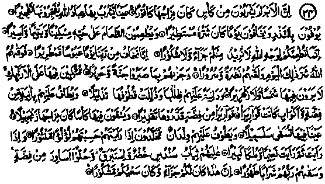
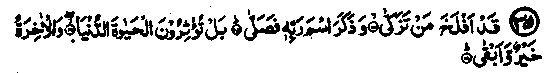
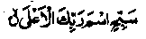
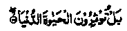

Chapter One · Section (a): Ayaat on the virtues of spending for the cause of Allah
9. Spending on the non-believing captives

34. Lo! the righteous shall drink of a cup whereof the mixture is of water of Kafur. A spring wherefrom the slaves of Allah drink, making it gush forth abundantly (in whatever direction they would desire). They fulfil the vow and fear a day whereof the evil is wide-spreading. And they feed the needy, the orphan and the captive, for love of Allah. And say: "We feed you for the sake of Allah only, we wish for no reward or thanks from you. Because we only fear a day of wrath and fate from our Lord". Therefore, Allah hath warded off from them the evil of that day and made them find brightness and joy; and hath awarded them, for all that they endured, a Garden and silk-attire; reclining therein upon couches, they will find there neither (heat of) sun nor bitter cold. The shade thereof will be close upon them and the clustered fruits bow down (at their command). Goblets of silver are brought round for them and beakers of glass: (Bright as) glass but (made) of silver. They themselves will determine the measure thereof (according to their wishes). They will have a drink in a cup whereof the mixture is of Zanjabeel (ginger); the water of a spring therein named Salsabeel. There serve them young men of everlasting youth, whom when you see you would take them for scattered pearls. When you look, you will see their bliss and immense territory. Their raiment will be fine green silk and gold embroidery, bracelets of silver will they wear. Their Lord will satisfy their thirst with a pure drink (and it will be said unto them): Lo! this is a reward for you. Your endeavour (upon earth) has found acceptance. (ad-Dahr: 5-22)
Note: The sacred Ayaat describe three varieties of drink, the specific quality of each drink and the way in which it will be taken. The first Ayat says that the righteous will drink it themselves, the second says that they will be offered a drink by their servants, while in the third, it is said that the Lord of all creation, the Grand Sovereign Himself, would present the drink to them. Probably, this may refer to three classes of the righteous; the common people, the superior ones and the highest class. In these Ayaat the greatness, honour and virtues of the righteous have been mentioned, which they shall attain especially through the performance of good deeds, particularly feeding the poor for the pleasure of Allah. If we had perfect Imaan and believed firmly in these promises, every one of us would like to follow the example of Siddiq-e-Akbar Radhiallaho anho, who gave away everything in his house to win Allah’s pleasure, leaving behind only the blessings associated with the names of Allah and His Rasul. These Ayaat refer to a few matters which need special attention:
1. There is mention of fountains which the dwellers of Jannah would shift to any place they like: Mujahid Rahmatullah alaihe explains that those fountains will flow to any point and in any direction of their choice. Qatadah Rahmatullah alaihe says that they will have drinks which have a mixture of ‘Kafoor’ and are sealed with fragrant musk, and the water of the fountains will run in any direction they desire. Ibne Shauzab Rahmatullah alaihe says that those people will have gold wands with which they will make a sign indicating the direction in which the fountains should flow and that will come about.
2. Qatadah Rahmatullah alaihe has been quoted as saying, ‘They fulfilled the ‘vow’ means they acted upon every order of Allah Ta'ala’; that is why they have been called Abrar (the righteous). Mujahid Rahmatullah alaihe says that the vow means an undertaking to perform a good deed for the sake of Allah (like fasting, I‘tikaaf or worship). Ikrimah Radhiallaho anho says, "It means offerings for thanks-giving”. Ibne Abbas Radhiallaho anho has been quoted to say that a man came to Rasulullah Sallallaho alaihe wasallam and submitted that he had vowed to kill himself for the sake of Allah. Rasulullah Sallallaho alaihe wasallam was busy in something else and could not properly attend to him. The man took his silence as an approval for fulfilling his vow and got up and went away to kill himself. Rasulullah Sallallaho alaihe wasallam came to know what the man was about to do and said, "Thanks be to Allah who has created such people in my Ummah who are so resolute in fulfilling their vows", and he ordered the man not to kill himself but to slaughter one hundred camels instead, for taking one’s own life was forbidden by religion and the ransom (blood-money) for a life taken was a hundred camels.
3. The feeding of prisoners in the Ayaat concerns the idolaters who had become prisoners in various battles. There were no Muslim prisoners at that time. When the feeding of non-Muslim prisoners carries so much reward from Allah, the reward for the Muslim captives would be far greater. Mujahid Rahmatullah alaihe says that when Rasulullah Sallallaho alaihe wasallam brought the captives of Badr (who were infidels) to Madinah, seven notable Sahabah, namely Abu Bakr, Umar, Ali, Zubair, Abdur Rahman, Sa‘d, and Abu Ubaidah Radhiallaho anhum were particularly generous in spending money on their food, etc. At this, the Ansaar remarked, "We fought those prisoners in the cause of Allah and you are looking after them so lavishly". Thereafter, the nineteen Ayaat beginning ( ) were revealed in praise of those Sahabah who looked after the prisoners. Hasan Rahmatullah alaihe says that, at the time of revelation of these Ayaat, there were only idolaters as prisoners.
Qatadah Rahmatullah alaihe says, "When Allah Jalla Shanohu ordered us to show kindness towards prisoners who were idolaters, the obligations in respect of Muslim prisoners must be far greater”. Ibne Jurraij Rahmatullah alaihe says that there were no Muslim prisoners at the time when these Ayaat were revealed. Only the idolaters were prisoners, and Rasulullah Sallallaho alaihe wasallam gave orders for looking after their welfare. Abu Razeen Rahmatullah alaihe says that once he was with Shaqeeq Ibne Salmah Rahmatullah alaihe when a few of the prisoners passed that way, and Shaqeeq told him to give something as Sadaqah to the prisoners and recited the above Ayaat
4. ‘We wish for no reward nor thanks’, means that the Sahabah did not like to have any type of return at all for their good deeds in this life, even in the form of Du‘aa or thanks. They wanted total return for them in Akhirah. Aishah and Umme Salmah Radhiallaho anhuma are reported to have given instructions, to the person who took their Sadaqah to the poor, to quietly listen to what the recipient said after receiving it When the person reported back any words of Du'aa, etc., to the venerable ladies, they used to make the same kind of Du‘aa, etc., in favour of the poor, saying that it was in return for what the poor had said, so that their Sadaqah remained purely and solely for the Akhirah. Umar Radhiallaho anho and his son Abdullah Radhiallaho anho are reported to have done the same. Zainul Abedin Rahmatullah alaihe has remarked that if the giver of Sadaqah waits for the person in need to come to him, that would not count as real generosity. The truly generous one is he who fulfils his obligations to Allah by going himself to the doors of the needy persons, and does not expect any expression of thanks for that, in view of the full faith he has in the rewards from Allah.
5. ‘The bunches of the fruits of Jannah obeying the commands’ means that they will reach them when and where the dwellers in Jannah wish them to reach. Baraa Ibne Aazib Radhiallaho anho says, "The inhabitants of Jannah will be able to eat the fruit as they wish, while sitting, standing or lying". Mujahid Rahmatullah alaihe says, "If they wished to have fruit while standing, the bunch would bend and come in front of them, just within their reach; it would bend lower if they desired to eat it while sitting; and it would bend still lower if they liked to eat it while lying”. Another Hadith reports him (Mujahid) as saying, "The ground of Jannah is made of silver, its dust is musk, the roots of its trees are made of gold, their branches and leaves are-made of pearls and jasper, with the fruit dangling in between them. If the dwellers in Jannah would like to eat the fruit while standing they would experience no difficulty in reaching it; if they desired to have it while sitting or reclining on their beds, it would bend down accordingly".
6. ‘Bright as glass but made of silver’ means that the silver will be transparent like glass. Ibne Abbas Radhiallaho anho has said that, in this life, if silver is beaten to the thinness of a fly’s wing, one cannot see water through it, but in Jannah the silver goblets will be transparent It has been said that in this life, there are to be found samples of everything in Jannah, except the goblets of silver of the type mentioned herein. Qatadah Rahmatullah alaihe says that if all the experts in the world work together to make a transparent goblet of this type, they will fail to do so. Ibne Abbas Radhiallaho anho has said that an incident relating to Ali and Fatimah Radhiallaho anhuma (which will be mentioned in the story No. 43 at the end of this book) occasioned the revelation of these Ayaat. It is not an unusual thing to find an Ayat being revealed in consequence of more than one occurrence taking place severally; in that case, it applies to all such incidents.

35. He is successful who purifies himself, And remembers the name of his Lord, and observes Salaat; but you prefer the life of the world. Although the Akhirah is far better and everlasting. (al-A'laa: 14-17)
Note: The Ulama have given several interpretations of ‘purifies himself; many of them say that it means ‘gives Sadaqah at the end of Ramadhan, called ‘Sadaqatul Fitr’; While some of them give it a general sense. Saeed Ibne Jubair Rahmatullah alaihe says that it means purifies himself of (the taint of) his lawfully earned wealth (through payment of Zakaat).
Qatadah Rahmatullah alaihe says, "Successful is he who has pleased his Creator by (spending) his wealth". Abul Ahwas Rahmatullah alaihe said, "Allah Ta‘ala Subhanohu has mercy on a person who gives Sadaqah and then performs Salaat". He then recited the above mentioned Ayat. In another version, he is reported to have said, "Let him, who can afford, give something as Sadaqah before offering Salaat". Ibne Mas'ood Radhiallaho anho says, "When a person intends to observe Salaat, it will be better for him to give something as Sadaqah before doing so". He then recited this Ayat. Arfaja Radhiallaho anho says that he once asked Ibne Mas'ood Radhiallaho anho to recite to him the Surah:

Glorify the name of thy Lord, the most High: (al-A‘laa)
He began to recite it and when he came to the Ayat:

But you prefer the life of this world, he stopped short in the midst of recitation and addressing the people, said, "We have preferred this life to the Akhirah." People sat listening quietly. He then again said, "We have preferred this life because we have seen the beauty and adornment of the world, its women, its food and its drinks, while things of the Akhirah have been veiled from us. We are engrossed in what is before, us, forgetful of what we have been promised in the Akhirah!"
Qatadah Rahmatullah alaihe has said that all mankind are engaged in the present-day worldly activities, except those who enjoy Allah’s protection, even though the Akhirah is far more valuable and everlasting. Anas Radhiallaho anho has quoted Rasulullah Sal-lallaho alaihe wasallam as saying that the Kalimah () saves people from the displeasure of Allah Ta'ala as long as they do not give preference to their worldly requirements as against the demands of religion, but when they begin to do so, the kalimah () is returned to them with the Divine remarks, "You are telling a lie". In another Hadith, Rasulullah Sallallaho alaihe wasallam has said that whoever bears testimony to
will enter Jannah, unless he has mixed it with something averse to it and polluted his faith with falsification. Rasulullah Sallallaho alaihe wasallam repeated his words three times and the gathering remained silent. Probably Rasulullah Sallallaho alaihe wasallam wanted someone to ask about it, but the people were quiet due to respect and awe. Finally a man got up from a distance and said, "O Rasulullah, may my parents be sacrificed for your sake, what is the meaning of, ‘mixing it with something else”? He replied, "The love of this world and preferring it to everything else, amassing wealth for its own sake and acting towards people unjustly and cruelly".
Another Hadith of Rasulullah Sallallaho alaihe wasallam says, "Whoever loves this world harms his Akhirah and when anyone loves the Akhirah he does harm to this world; therefore, prefer the love of the thing (Akhirah) that will remain for ever, over the thing (this world) that will come to an end”. In another Hadith Rasulullah Sallallaho alaihe wasallam has said, "This world is the home of one who has no home in the Akhirah and it is the property of him who has no share in Akhirah, and only that person collects or hoards for this life who lacks wisdom". A Hadith says that, amongst His entire creation, Allah Ta'ala does not dislike anything more than this world; he has never looked at this world with kindness ever since He created it’. In another Hadith Rasulullah Sallallaho alaihe wasallam has said that the love of this life is the root-cause of all sins. At the end of this book in Chapter six, a number of Ayaat and Ahadith regarding this life and Akhirah have been given in a summarised form. In addition to all the Ayaat which have been mentioned uptil now in this volume, there are many other Ayaat in the Holy Qur’an, exhorting us to spend for the cause of Allah Jalla Shanohu. This subject has been treated again and again in a variety of ways by Allah Jalla Shanohu in the Holy Qur’an, with different ways of persuasion to spend all. This shows its unquestionable importance, particularly, when all out of which one spends is a grant from Allah Ta'ala. For example, a rich man gives his servant some money for his personal needs but also says that he would like him to set aside a little, money for such and such thing, and promises him a bountiful reward in case he complies with his directions. In such an event, it is obvious that the servant would gladly spend money on that particular thing, knowing that he would receive much more than what he has spent on it